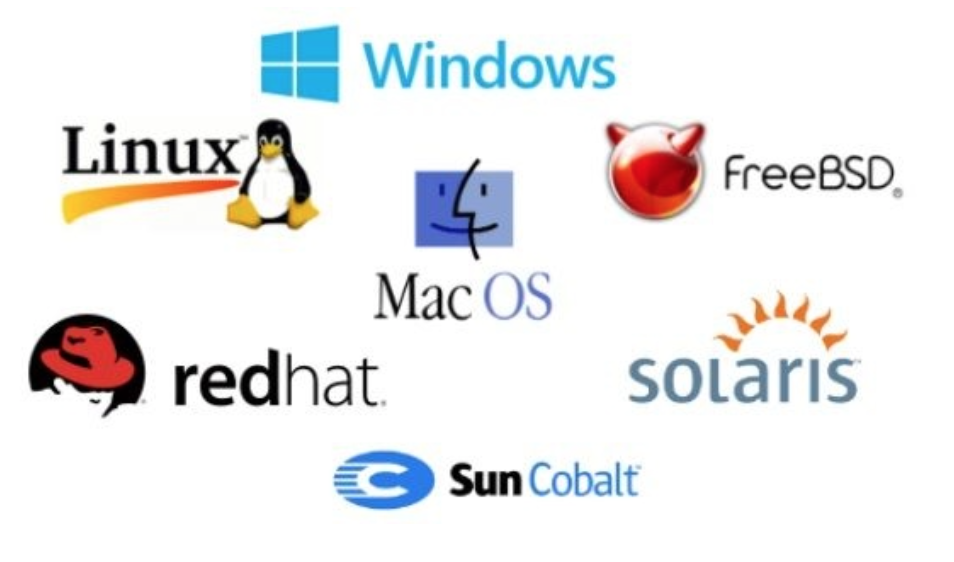

Integración de los Sistemas Operativos en red¶
Escenarios heterogéneos¶
Un escenario heterogéneo es aquél donde conviven, en una red diversos equipos con distintas arquitecturas y sistemas operativos distintos, bien sea por su versión, bien sea porque son de distinta factoría. En dichos escenarios, el intercambio de datos es posible si se aplican herramientas de integración de sistemas operativos.

Principales herramientas en la integración de SOs¶
La integración de sistemas operativos (SOs) implica combinar diferentes plataformas y tecnologías para que trabajen juntas de manera eficiente. Existen herramientas clave que facilitan esta integración, y se pueden clasificar según su propósito. Aquí te dejo un listado con las principales:
1. Virtualización
Estas herramientas permiten ejecutar múltiples SOs en un solo hardware físico, simplificando la integración en entornos mixtos.
- VMware vSphere: Plataforma líder para gestionar máquinas virtuales.
- Hyper-V: Virtualización integrada en Windows Server.
- VirtualBox: Solución de código abierto para entornos locales.
- Proxmox VE: Virtualización basada en KVM y LXC.
2. Contenedores
Los contenedores son ideales para ejecutar aplicaciones aisladas que incluyen su entorno operativo.
- Docker: Permite empaquetar aplicaciones con todas sus dependencias para ejecutarlas en cualquier entorno.
- Podman: Alternativa a Docker, sin necesidad de un daemon centralizado.
- Kubernetes: Orquestador para gestionar contenedores en entornos complejos.
3. Orquestadores y Automatización
Estas herramientas facilitan la gestión, configuración y despliegue de SOs y aplicaciones.
- Ansible: Configuración y automatización basada en archivos YAML.
- Terraform: Gestión de infraestructura como código para despliegues híbridos.
- Puppet y Chef: Plataformas para configuración de sistemas y gestión de entornos.
- SaltStack: Automate integración y gestión de SOs.
4. Herramientas de Administración de Sistemas
- WSUS (Windows Server Update Services): Para gestionar actualizaciones en entornos Windows.
- Spacewalk: Gestión de actualizaciones y configuración para Linux.
- Nagios y Zabbix: Monitorización de sistemas operativos y servicios.
- Cockpit: Administración basada en web para sistemas Linux.
5. Sistemas de Archivos Compartidos
- Samba: Permite la interoperabilidad entre Windows y Linux a nivel de archivos.
- NFS (Network File System): Para compartir sistemas de archivos entre SOs Unix/Linux.
- SMB (Server Message Block): Protocolo para compartir archivos e impresoras en redes mixtas.
6. Soluciones de Red
Estas herramientas facilitan la comunicación entre SOs distintos:
- OpenVPN y WireGuard: Redes privadas virtuales para integrar sistemas.
- CIFS: Protocolo para compartir archivos entre Windows y otros sistemas.
- HAProxy: Balanceo de carga para servicios distribuidos.
7. Almacenamiento y Backup
- FreeNAS/TrueNAS: Solución NAS compatible con múltiples SOs.
- Veeam Backup: Solución de respaldo para entornos heterogéneos.
- Bacula: Sistema de backup multiplataforma.
8. Sistemas de Gestión de Identidad
- Active Directory: Gestiona usuarios y recursos en entornos Windows, integrable con Linux.
- OpenLDAP: Alternativa ligera para entornos Linux.
- FreeIPA: Gestión de identidad, políticas y autenticación en Linux.
En este tema nos centraremos en la utilización de Docker, ya que es una herramienta clave en la integración de sistemas operativos, especialmente en entornos de red. Basada en los siguientes aspectos:
-
Portabilidad: Docker encapsula aplicaciones y sus dependencias en contenedores que se ejecutan de forma consistente en cualquier entorno. Esto elimina problemas de compatibilidad entre diferentes sistemas operativos.
-
Aislamiento: Permite que múltiples aplicaciones se ejecuten en la misma máquina sin interferir entre sí, lo que es ideal para pruebas y despliegues seguros.
-
Eficiencia: Los contenedores son ligeros en comparación con las máquinas virtuales, lo que reduce el uso de recursos y mejora el rendimiento.
-
Flexibilidad en despliegue: Con Docker, los desarrolladores pueden crear entornos completos con solo un archivo de configuración (Dockerfile), facilitando la integración continua y el despliegue continuo (CI/CD).
-
Ecosistema: Docker tiene una comunidad activa y una gran cantidad de imágenes predefinidas en Docker Hub, lo que acelera el desarrollo y la integración de sistemas.